Empresa familiar com mais de 40 anos de tradição artesanal. Peças em bronze e alumínio para cemitério, igrejas, arte sacra e identificação. Atendemos todo o Brasil.
Atendemos todo o Brasil · Frete pelos Correios
40+Anos de história
101+Produtos no catálogo
1985Fundação
BrasilAtendimento nacional
Veja de perto
O Bronze sendo Fundido
Cada peça começa com alumínio ou bronze derretido a mais de 700°C. Assista ao processo artesanal que fazemos há mais de 40 anos.
Processo · Fundição Tropical
Derretimento do Metal
Processo · Fundição Tropical
Metal em Estado Líquido
Nossos produtos
Catálogo por Categoria
⚱
Peças para Cemitério
Placas memoriais em bronze ou alumínio com porta-retrato, letras em relevo e ornamentos exclusivos. Personalizadas com nome e datas.
17 modelos · Bronze e Alumínio
→
✝
Crucifixos e Cristos
Cristos, crucifixos e cruzes em bronze fundido. Clássicos, contemporâneos e minimalistas para igrejas e cemitérios.
8 modelos · Bronze dourado
→
🕊
Imagens Sacras
Nossa Senhora, São Miguel, Jesus e anjos em bronze dourado, policromado e niquelado. Arte sacra de alto padrão.
19 peças · Vários acabamentos
→
⛪
Peças para Igreja
Cálices, castiçais, candelabros, sacrários e peças litúrgicas em bronze dourado e metal niquelado.
16 produtos · Bronze e Prata
→
🔠
Letras e Manuscritos
Nomes e datas em bronze fundido. Manuscritos cursivos, caixa alta e numeração. 100% personalizados.
7 estilos · Totalmente personalizável
→
✨
Ostensórios
Peças litúrgicas para exposição e adoração ao Santíssimo Sacramento. Estilos barroco, gótico, solar e contemporâneo em bronze dourado ou prateado.
12 modelos · Bronze dourado e prateado
→
🪆
Apliques para Móveis
Puxadores, rosetas, argolas e batedores em bronze fundido para móveis clássicos, coloniais e de época.
22 modelos · Bronze dourado envelhecido
→
◈
Sob Encomenda
Peças exclusivas e personalizadas. Apliques, artesanais, industriais e outros produtos especiais. Consulte.
Consulte disponibilidade
→
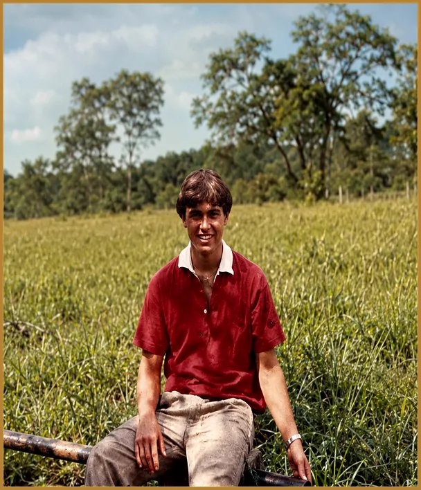
✦ 1980
Santo · Fundador
O Fundador
Santo
Fundador & Mestre Fundidor · Desde 1985
Olá, meu nome é Santo e sou proprietário da Fundição Tropical. Nossa empresa está presente no mercado há mais de 40 anos, oferecendo qualidade, compromisso e confiança em cada serviço realizado.
Trabalhamos com dedicação e experiência para atender nossos clientes da melhor forma possível, sempre buscando entregar resultados que superem as expectativas.
"Posso dizer com sinceridade que amo o que faço. Por isso, quando assumimos um projeto, entregamos não apenas um serviço, mas todo o nosso empenho, responsabilidade e comprometimento."— Santo, Fundador da Fundição Tropical
Fundição Tropical · Maringá PR · Desde 1985
Catálogo Geral
Selecione uma categoria e filtre os produtos. Clique em "Orçamento" para falar pelo WhatsApp.
Filtrar:
6 modelos no site · outros 11 sob consulta✦ Todas personalizáveis
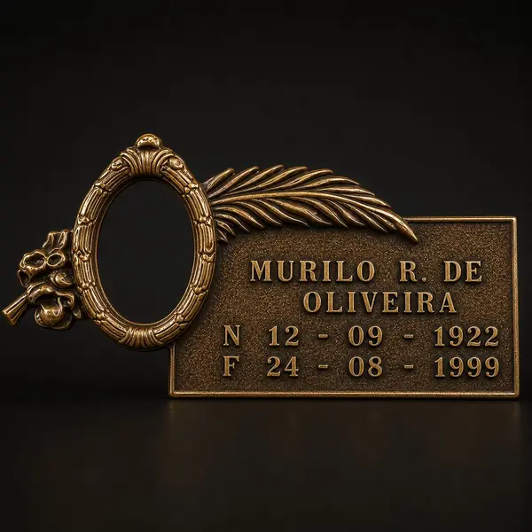
Com foto
FT-CEM-01
Placa c/ Porta-Retrato Oval e Folha de Palmeira
Porta-retrato oval ornamentado com folha de palmeira. Personalizável com nome e datas.
Aplicação: Jazigos, túmulos, gavetas e mausoléus
Material:
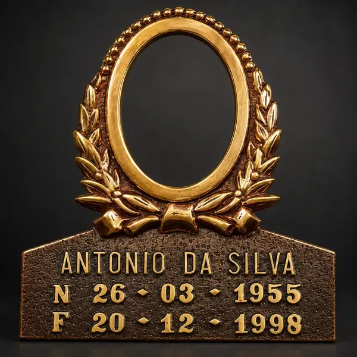
Cabeceira
FT-CEM-02
Placa c/ Coroa de Louros e Porta-Retrato
Estilo vertical clássico com coroa de louros dourada. Ideal como cabeceira de túmulo.
Aplicação: Cabeceiras de túmulo, jazigos e mausoléus
Material:
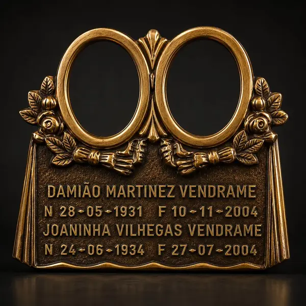
Casal
FT-CEM-03
Placa Dupla para Casal — Dois Porta-Retratos e Rosas
Dois porta-retratos ovais com rosas em bronze. Espaço para dois nomes e datas.
Aplicação: Jazigos e mausoléus para casal
Material:
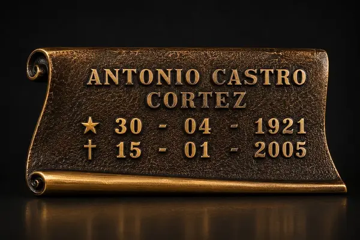
Pergaminho
FT-CEM-06
Placa em Formato de Pergaminho Clássico
Pergaminho enrolado em bronze com acabamento envelhecido.
Aplicação: Jazigos, túmulos e nichos
Material:
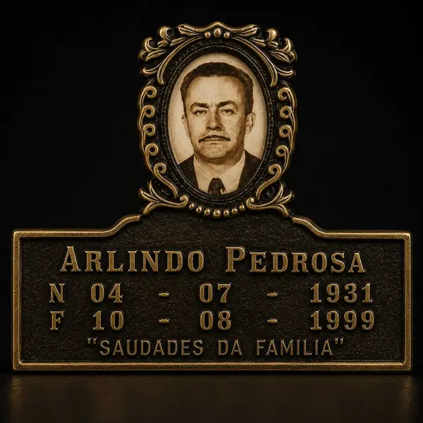
Foto Cerâmica
FT-CEM-09
Placa com Foto Cerâmica e Moldura Barroca
Foto cerâmica em moldura oval barroca. Resistente às intempéries.
Aplicação: Jazigos, túmulos e nichos individuais
Material:
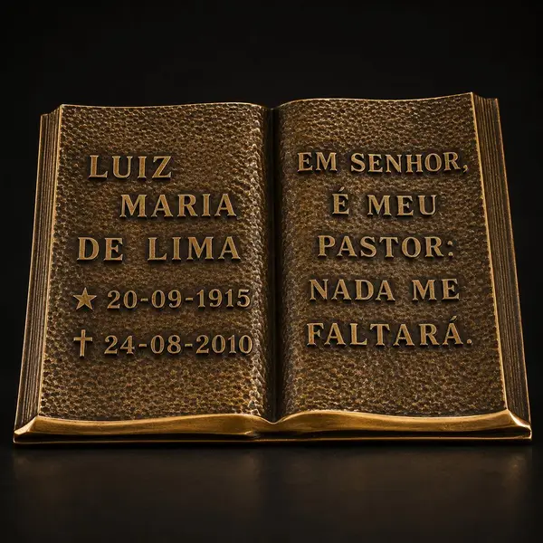
Bíblia Aberta
FT-CEM-11
Placa em Formato de Bíblia Aberta
Design único em formato de bíblia fundida. Espaço para versículo bíblico.
Aplicação: Jazigos, túmulos e espaços religiosos
Material:
Nenhum produto encontrado.
Exibindo 6 de 17 modelos disponíveis no catálogo completo
Filtrar:
6 modelos no site · outros 2 sob consulta✦ Bronze dourado
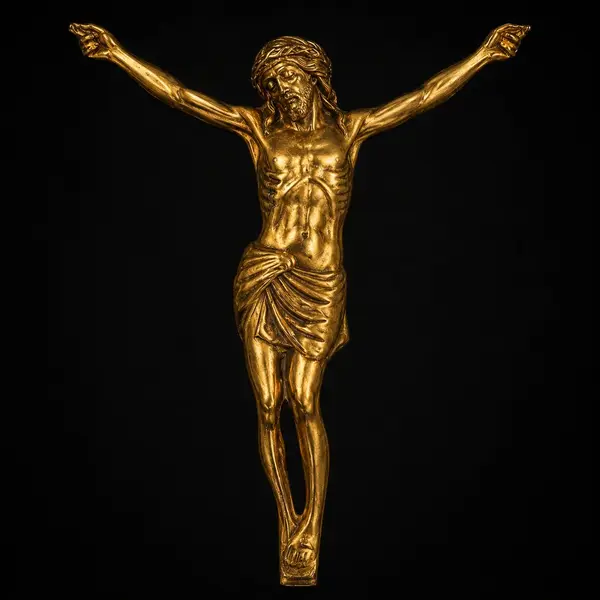
FT-CRU-01
Cristo Clássico em Bronze Dourado — Sem Cruz
Modelagem anatômica refinada com coroa de espinhos. Para fixação em cruz de madeira.
Aplicação: Igrejas, capelas, cemitérios e residências
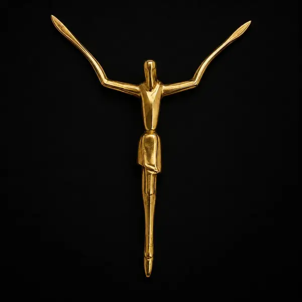
FT-CRU-02
Cristo Contemporâneo Abstrato em Bronze
Design contemporâneo e formas abstratas. Silhueta estilizada de grande impacto visual.
Aplicação: Igrejas modernas e capelas
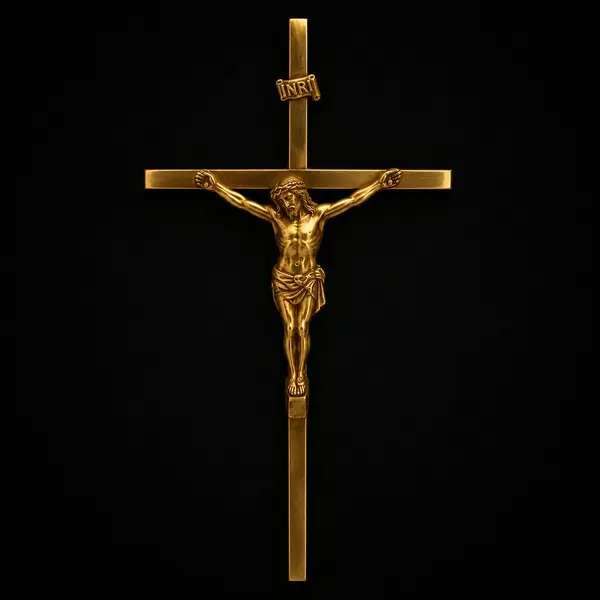
FT-CRU-04
Crucifixo Completo — Cruz Fina com INRI
Cruz de perfil fino com Cristo de modelagem clássica e placa INRI.
Aplicação: Igrejas, capelas e cemitérios
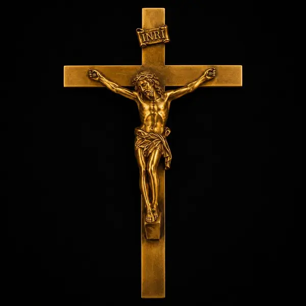
FT-CRU-05
Crucifixo Completo — Cruz Robusta com Pergaminho
Cruz robusta com Cristo clássico e placa INRI em formato de pergaminho.
Aplicação: Igrejas, capelas e sacristias
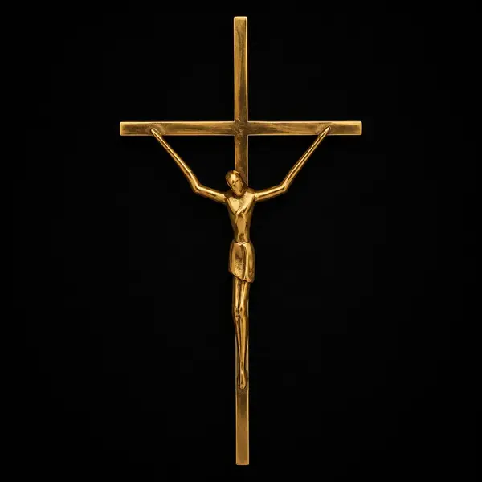
FT-CRU-06
Crucifixo Moderno com Cristo Estilizado
Cristo estilizado de formas orgânicas. Fusão entre arte sacra e design contemporâneo.
Aplicação: Igrejas modernas e capelas
FT-CRU-07
Cruz Simples em Bronze — Perfil Fino
Linhas minimalistas com acabamento escovado. Para lápides, túmulos e jazigos.
Aplicação: Lápides, túmulos, jazigos e igrejas
Nenhum produto encontrado.
Filtrar:
6 peças no site · outras 13 sob consulta✦ Arte sacra desde 1985
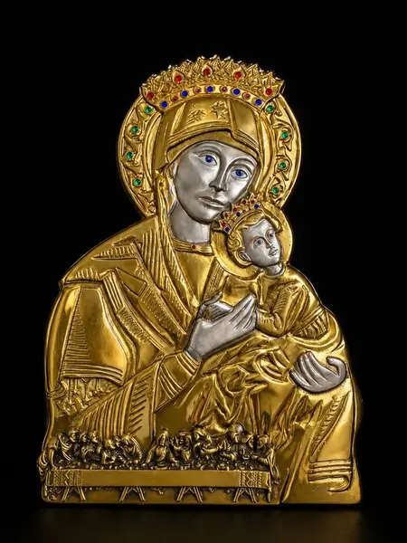
FT-SAC-01
N. Sra. do Perpétuo Socorro — Bronze Dourado e Prata
Ícone em bronze dourado com rosto em prata e pedras coloridas.
Aplicação: Igrejas, capelas, altares e oratórios
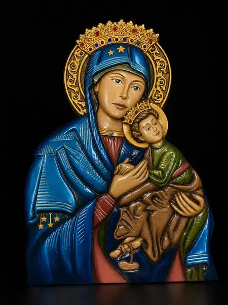
FT-SAC-02
N. Sra. do Perpétuo Socorro — Policromada
Alto-relevo com policromia em tons de azul e dourado. Coroa com pedras coloridas.
Aplicação: Igrejas, santuários e oratórios
FT-SAC-05
São Miguel Arcanjo com Balança da Justiça
Escultura imponente com coroa, asas abertas, espada e balança. Base octogonal.
Aplicação: Igrejas, escritórios e residências
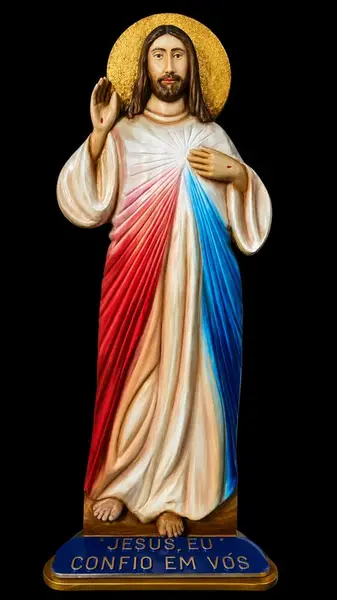
FT-SAC-06
Jesus Misericordioso — Imagem Policromada
Policromia fiel com raios vermelhos e azuis. Base azul com inscrição.
Aplicação: Igrejas, capelas, oratórios e cemitérios
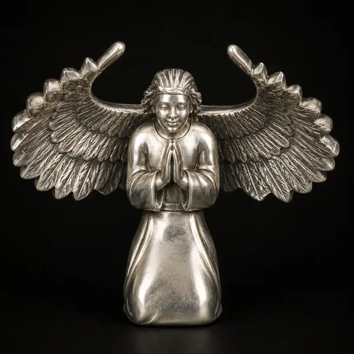
FT-SAC-11
Anjo Orante de Joelhos com Asas Abertas
Anjo ajoelhado em bronze niquelado com asas amplamente abertas.
Aplicação: Altares, jazigos e cemitérios
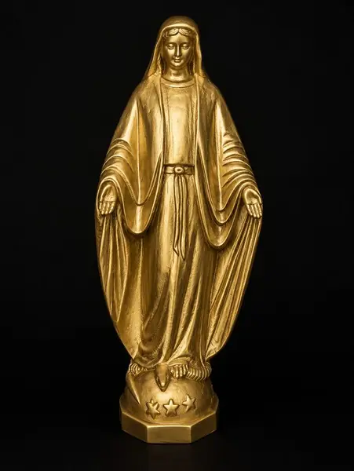
FT-SAC-13
N. Sra. das Graças — Bronze Dourado
Postura clássica com braços abertos sobre globo com serpente.
Aplicação: Igrejas, capelas e cemitérios
Nenhum produto encontrado.
Filtrar:
6 produtos no site · outros 10 sob consulta✦ Peças litúrgicas
FT-IGR-01
Cálice Litúrgico com Tampa e Bolsa em Veludo
Conjunto completo em metal niquelado prata com tampa cônica e bolsa de veludo vermelho.
Aplicação: Missas, celebrações eucarísticas e capelas
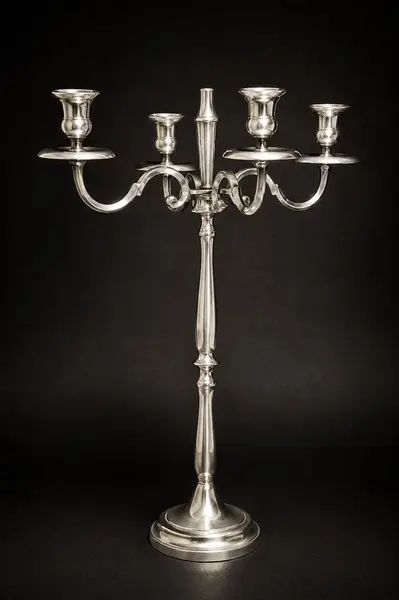
FT-IGR-03
Candelabro de 4 Braços em Metal Niquelado
Quatro braços curvos com volutas elegantes. Haste central torneada com base circular.
Aplicação: Altares, capelas e cerimônias litúrgicas
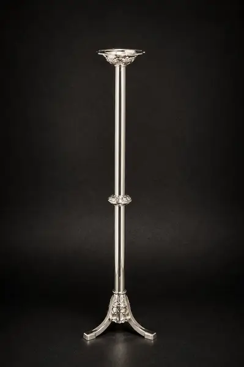
FT-IGR-05
Castiçal Alto de Altar com Base Tripé
Castiçal alto com base tripé floral e haste tubular slim.
Aplicação: Altares de igrejas e capelas
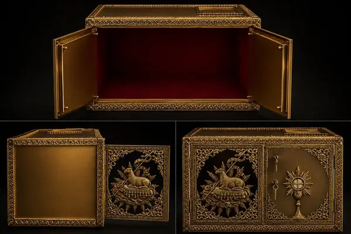
FT-IGR-10
Sacrário / Tabernáculo em Bronze Dourado
Monumental em bronze dourado. Cordeiro de Deus em relevo. Interior em veludo vermelho.
Aplicação: Igrejas, capelas e santuários
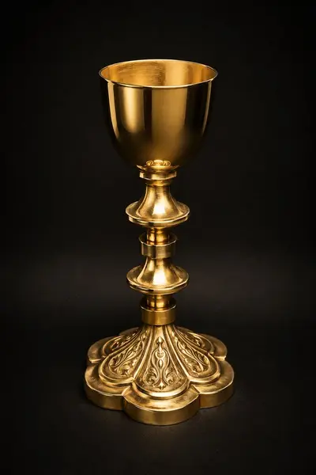
FT-IGR-11
Cálice Gótico em Bronze Dourado — Base Lobulada
Copa ampla com haste torneada e nó central. Base lobulada com ornamentos vegetais.
Aplicação: Missas, igrejas e capelas
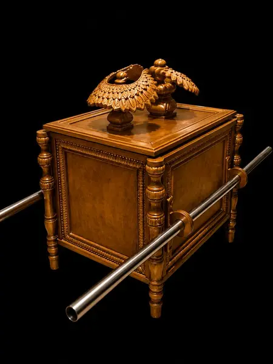
FT-IGR-15
Arca da Aliança em Madeira Esculpida
Réplica artesanal em madeira maciça com hastes em aço inoxidável polido.
Aplicação: Igrejas, cenários litúrgicos e exposições
Nenhum produto encontrado.
Filtrar:
3 estilos✦ 100% personalizável
FT-LET-01
Manuscrito Cursivo — Acabamento Escovado
ex: Família, Silva, Oliveira...
100% personalizado com o nome, sobrenome ou texto de sua escolha. Acabamento artesanal em bronze fundido.
Aplicação: Fachadas de jazigos, mausoléus e residências
FT-LET-03
Caixa Alta — Acabamento Polido Alto Brilho
ex: FAMÍLIA, SILVA, SANTOS...
100% personalizado com o nome, sobrenome ou texto de sua escolha. Acabamento artesanal em bronze fundido.
Aplicação: Fachadas de jazigos, mausoléus e residências
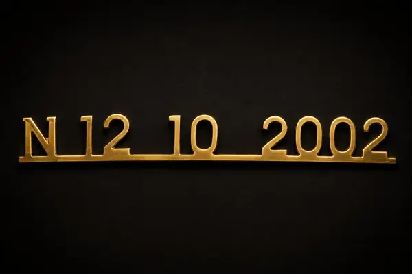
FT-LET-07
Linha de Datas em Bronze — N e F
ex: N 12 10 1950 / F 24 03 2005
100% personalizado com o nome, sobrenome ou texto de sua escolha. Acabamento artesanal em bronze fundido.
Aplicação: Fachadas de jazigos, mausoléus e residências
Nenhum produto encontrado.
Filtrar:
12 peçasBronze · Dourado e Prateado
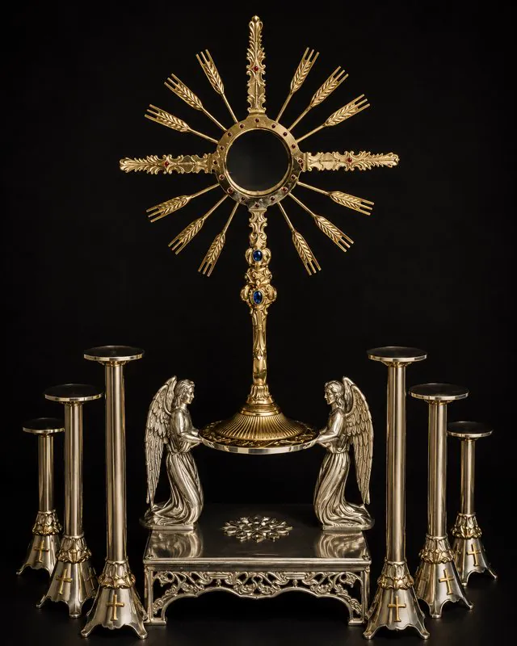
FT-OST-01
Ostensório Barroco Imperial com Anjos
Conjunto com ostensório barroco, luneta circular, dois anjos adorantes e seis castiçais.
Aplicação: Exposição solene, altares de catedrais e basílicas
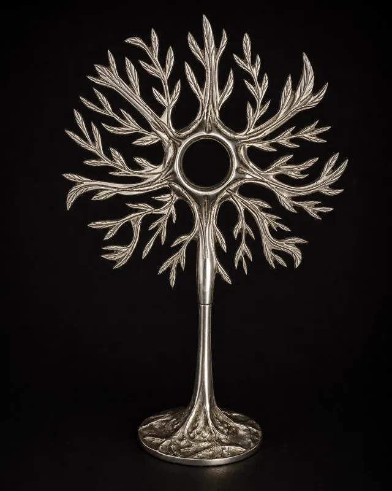
FT-OST-02
Ostensório Árvore da Vida
Design único inspirado na Árvore da Vida, com ramos e folhas esculpidos irradiando da luneta central.
Cruz com Instrumentos da Paixão: escada, lança, galo, mantos e dados. Obra de rara complexidade.
Aplicação: Exposição na Semana Santa, museus eclesiásticos
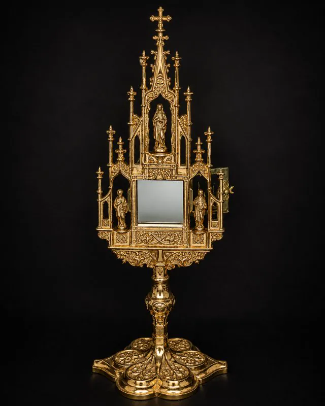
FT-OST-07
Ostensório Catedral Gótica — Dourado
Estilo gótico com pináculos, arcos ogivais e figuras de santos. Luneta retangular central.
Aplicação: Catedrais, basílicas, sés diocesanas
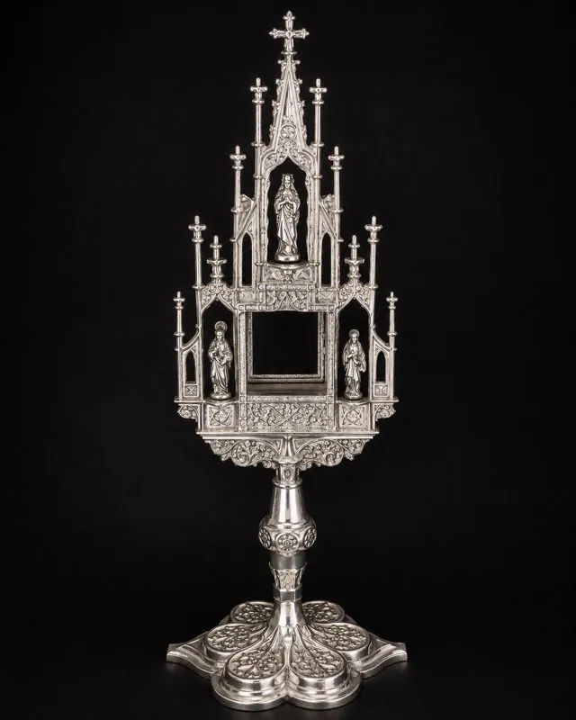
FT-OST-08
Ostensório Catedral Gótica — Prateado
Mesmo modelo gótico catedralício em acabamento prateado brilhante. Base em trevo quatrifólio.
Aplicação: Catedrais, basílicas, sés diocesanas
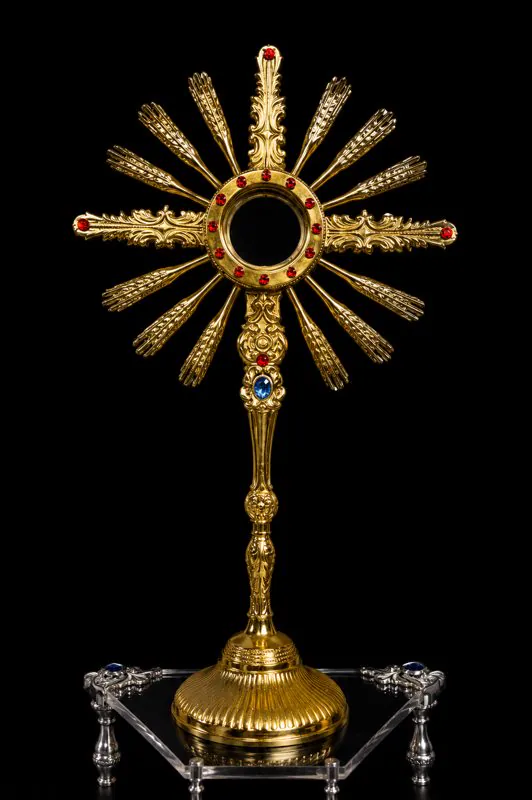
FT-OST-09
Ostensório Solar com Base Acrílica
Solar dourado com rubis e safira. Base acrílica transparente com suporte prateado e pedras azuis.
Aplicação: Altares modernos, procissões de Corpus Christi
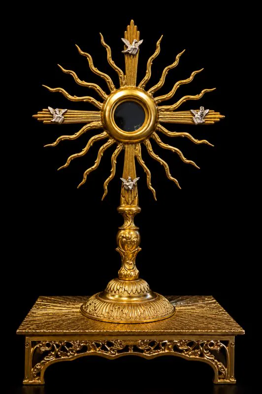
FT-OST-10
Ostensório Solar com Anjos Bicolor — Trono
Raios flamejantes dourados com quatro anjos adorantes em prata. Base-trono quadrada dourada.
Aplicação: Exposição solene, procissão de Corpus Christi
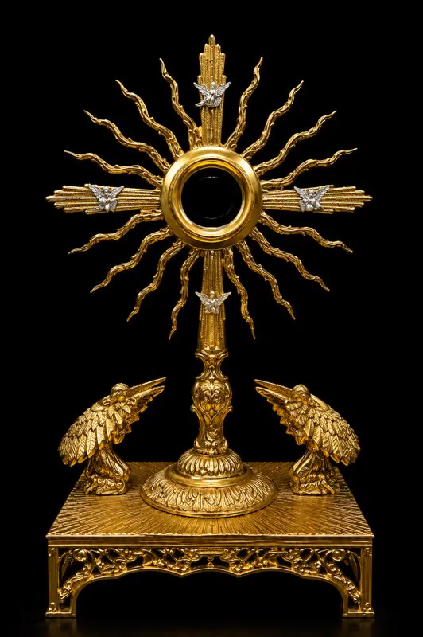
FT-OST-11
Ostensório Solar com Pelicanos e Anjos — Trono Grande
Raios flamejantes, anjos em prata e dois pelicanos adorantes na base — símbolo eucarístico.
Aplicação: Altares-mores de catedrais e basílicas
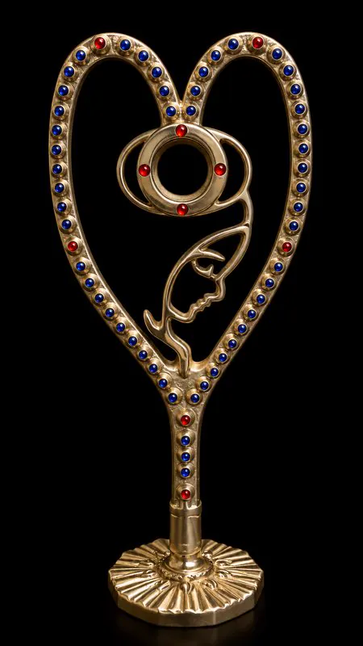
FT-OST-12
Ostensório Coração com Perfil de Nossa Senhora
Coração cravejado com safiras e rubis. Perfil esculpido de Nossa Senhora em relevo na luneta.
Aplicação: Capelas marianas, festas de Nossa Senhora
Nenhuma peça encontrada.
Ostensórios sob encomenda
Fabricamos ostensórios personalizados em bronze dourado ou prateado para igrejas, capelas e santuários.
Filtrar:
22 peçasBronze · Dourado Envelhecido
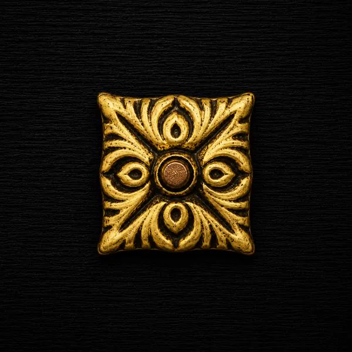
FT-APL-01
Roseta Quadrada Acanto
Aplique quadrado com motivo de acanto em quatro pétalas simétricas e centro circular em relevo.
Aplicação: Cantoneiras de móveis, portas, painéis decorativos
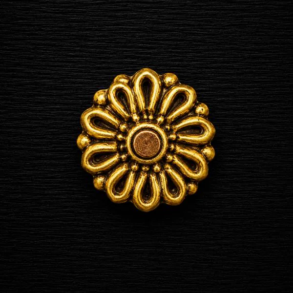
FT-APL-02
Roseta Circular Floral
Aplique circular com pétalas duplas em camadas concêntricas. Inspirado na margarida clássica.
Aplicação: Centro de painéis, portas de armário, móveis coloniais
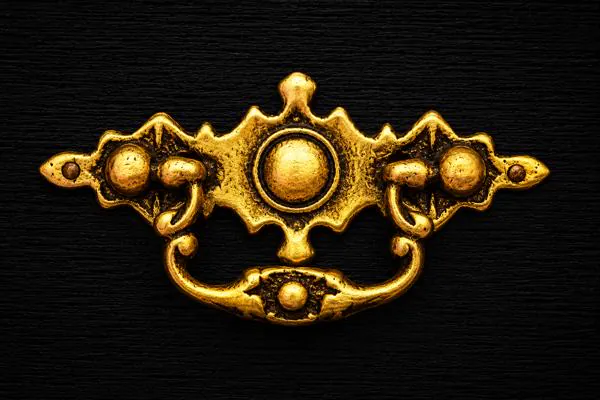
FT-APL-03
Puxador Barroco com Medalhão
Medalhão central esférico com volutas barrocas. Fixação por parafusos aparentes laterais.
Aplicação: Gavetas de cômodas, buffets, armários coloniais
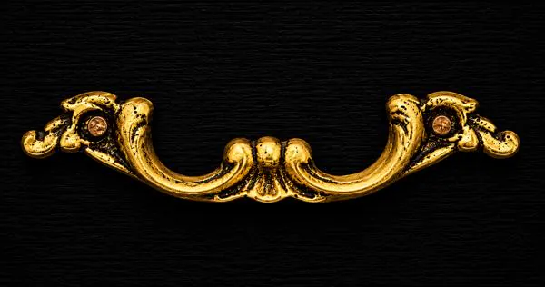
FT-APL-04
Puxador Rocaille com Dragões
Cabeças de dragões nas extremidades, corpo central em volutas encurvadas. Barroco português.
Aplicação: Gavetas de aparadores, escrivaninhas clássicas
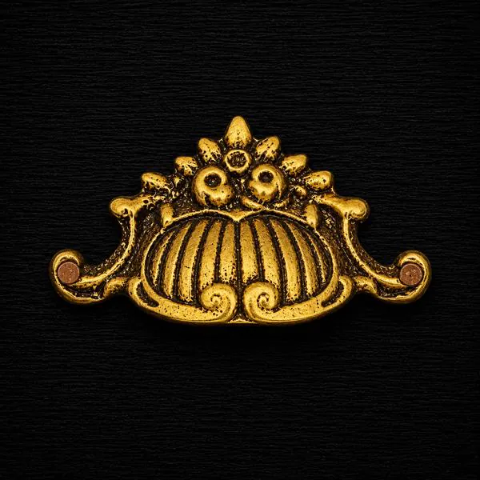
FT-APL-05
Puxador Cesto Floral
Cesto oval com flores em relevo no centro e volutas laterais. Estilo rococó Luis XV.
Aplicação: Gavetas de cômodas, criados-mudos, armários clássicos
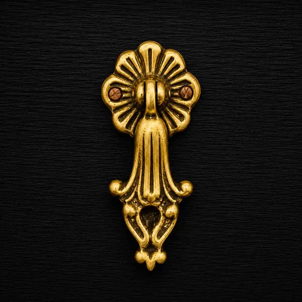
FT-APL-06
Argola Pendente — Flor de Leque
Espelho superior em leque estriado. Argola em gota alongada com ornamento em flor de lótus.
Aplicação: Portas de entrada, armários antigos, escrivaninha
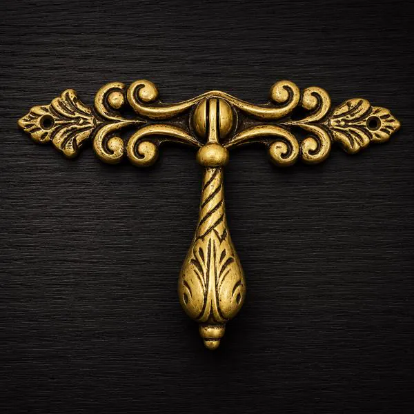
FT-APL-07
Puxador Espinha com Voluta
Espelho em voluta central com braços em espinha de acanto. Pingente torcido com motivo floral.
Aplicação: Gavetas de escrivaninha, secretárias, escritório clássico
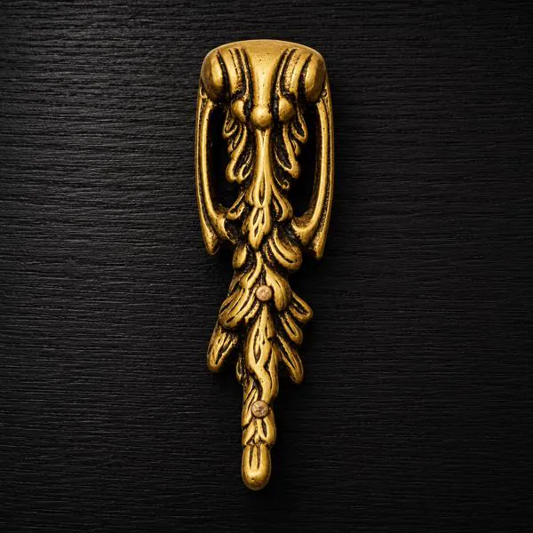
FT-APL-08
Argola Folhagem Pendente
Espelho retangular em folhagens com pingente inferior de folhas ramificadas em dupla camada.
Aplicação: Portas internas, gavetas de cômoda, madeira maciça
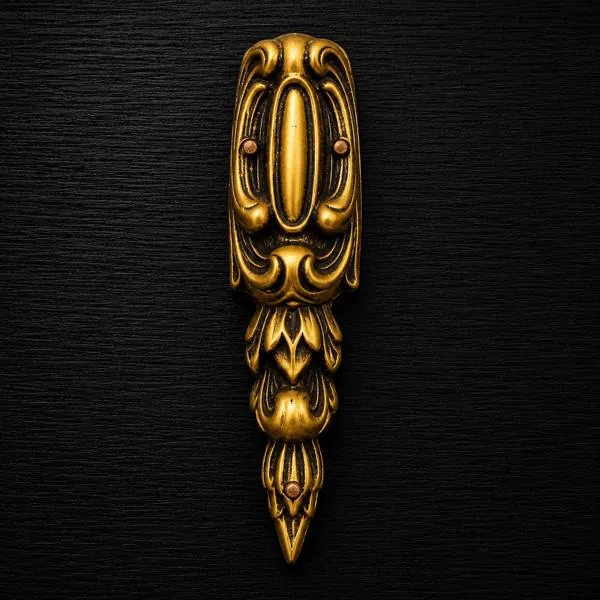
FT-APL-09
Argola Art Nouveau — Lança
Estilo Art Nouveau com argola oval central e longa ponteira em lança com motivos vegetais.
Aplicação: Portas de salas, armários de jantar, estilo inglês
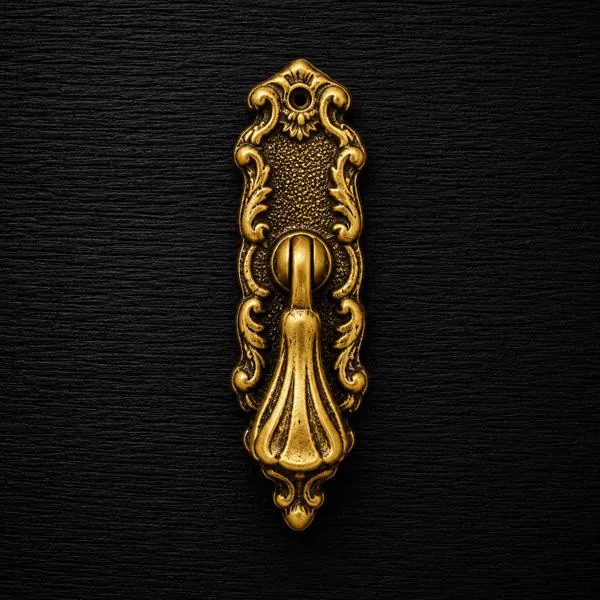
FT-APL-10
Batedor Barroco com Escudo
Espelho vertical ornado em volutas barrocas com argola pendente e fundo texturizado ponteado.
Aplicação: Portas de entrada, portões internos, móveis de aparato
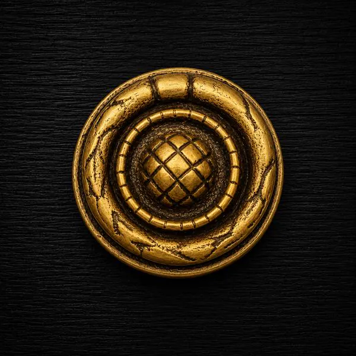
FT-APL-11
Argola Circular Tramado
Espelho redondo com argola pendente acima e centro em relevo tramado com aro estriado.
Aplicação: Gavetas de aparadores, portas de armário, buffets
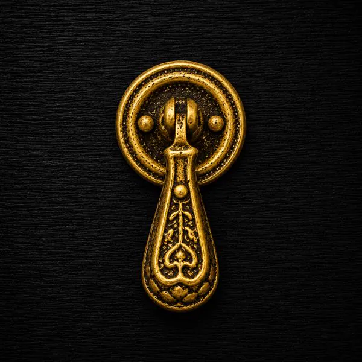
FT-APL-12
Argola Circular com Pingente Floral
Espelho redondo ponteado com pingente em forma de gota e gravação floral interior.
Aplicação: Gavetas de cômodas, armários antigos, cristaleiras
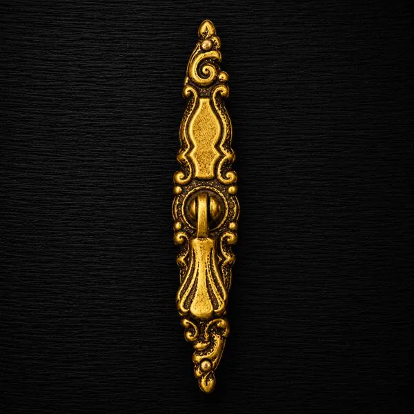
FT-APL-13
Batedor Ogival Duplo
Espelho duplo ogival com argola pendente central e volutas simétricas. Design elegante.
Aplicação: Portas internas, portas de escritório, gabinetes
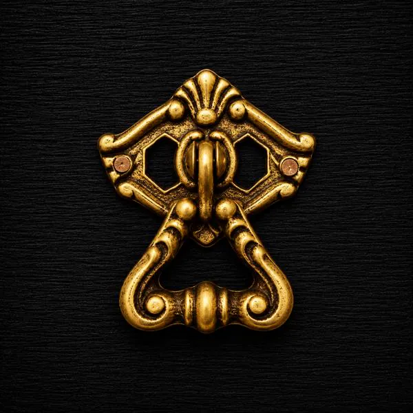
FT-APL-14
Batedor Losango Geométrico
Espelho losango com abertura hexagonal, argola de anel e braços diagonais tubulares.
Aplicação: Portas de entrada, armários de escritório, coloniais
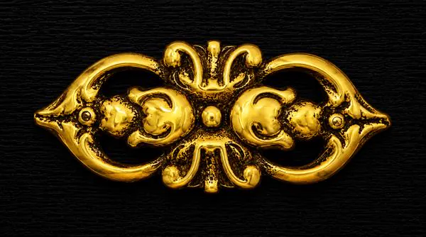
FT-APL-15
Puxador Oval Renascentista
Oval com volutas barrocas simétricas, centro em florão em relevo. Acabamento dourado polido.
Aplicação: Gavetas de aparadores grandes, buffets, sala
FT-APL-16
Puxador Barroco com Medalhão Oval e Pérolas
Medalhão oval central flanqueado por pérolas esféricas e volutas com folhagens.
Aplicação: Gavetas de cômodas nobres, escrivaninhas, aparato
FT-APL-17
Puxador Assimétrico Concha e Folha
Assimétrico rococó com concha em leque à direita e folhagens à esquerda. Design dinâmico.
Aplicação: Gavetas de escrivaninha, secretárias Luis XV
FT-APL-18
Puxador Acanto Aberto com Argola
Folhas de acanto simétricas irradiando das extremidades com argola central em anel simples.
Aplicação: Gavetas de cômodas, armários de sala, vitrines
FT-APL-19
Puxador Concha Ondulante
Conchas em leque nas extremidades, corpo ondulado com nervuras e pérola central. Rococó marítimo.
Aplicação: Gavetas de cômodas, armários de banheiro clássico
FT-APL-20
Puxador Floral com Rosas
Rosas e folhagens em altorrelevo com argola semicircular central. Estilo vitoriano floral.
Aplicação: Cômodas de quarto, armários de banheiro, românticos
FT-APL-21
Puxador Concha Dupla em U
Semicírculo com conchas em dupla camada e enrolamento central de acanto. Inspiração francesa.
Aplicação: Gavetas de aparadores, buffets, sala de jantar
FT-APL-22
Puxador Acanto com Medalhão Central
Grande extensão com folhagens de acanto, flores laterais, medalhão central ornado e roseta.
Aplicação: Aparadores de grandes dimensões, buffets históricos
Nenhuma peça encontrada.
Apliques sob encomenda
Puxadores, rosetas e batedores em bronze fundido para móveis clássicos, coloniais e de época.
Precisa de um produto específico?
Entre em contato pelo WhatsApp. Atendemos todo o Brasil com qualidade artesanal desde 1985.
Fundição Tropical — Maringá, Paraná
Nossa História
Quatro décadas moldando bronze e alumínio em arte, fé e tradição. Uma história de família construída com dedicação e amor pelo ofício.
40+Anos
1985Fundação
BrasilNacional
100%Familiar
A trajetória
Quatro décadas em bronze e Alumínio
Em 1985, na cidade de Maringá, no coração do Paraná, nascia a Fundição Tropical. Fundada por Santo, um jovem empreendedor que desde cedo demonstrou que trabalho duro, dedicação e amor pelo que faz são os ingredientes de uma história duradoura.
Desde os primeiros anos, a empresa se especializou em peças que tocam a alma: crucifixos, arte sacra, letras em bronze, ostensórios e placas para cemitério. Cada produto é resultado de um processo artesanal cuidadoso, onde técnica e devoção caminham lado a lado.
Ao longo de mais de quatro décadas, a Fundição Tropical construiu sua reputação atendendo igrejas, capelas, cemitérios, famílias e colecionadores em todo o Brasil — sempre mantendo o compromisso com a qualidade que só a tradição familiar pode garantir.
✦ 1980
Santo · Fundador
O Fundador
Santo
Fundador & Mestre Fundidor · Desde 1985
Olá, meu nome é Santo e sou proprietário da Fundição Tropical. É um prazer falar com você. Nossa empresa está presente no mercado há mais de 40 anos, oferecendo qualidade, compromisso e confiança em cada serviço realizado.
Trabalhamos com dedicação e experiência para atender nossos clientes da melhor forma possível, sempre buscando entregar resultados que superem as expectativas.
"Posso dizer com sinceridade que amo o que faço. Por isso, quando assumimos um projeto, entregamos não apenas um serviço, mas todo o nosso empenho, responsabilidade e comprometimento. Se você escolher trabalhar conosco, pode ter certeza de que faremos o nosso melhor para garantir um serviço de excelência."— Santo, Fundador da Fundição Tropical
Marcos da nossa história
1985
Fundação da empresa Santo funda a Fundição Tropical em Maringá, PR, com foco em arte sacra e peças memoriais em bronze.
1990
Expansão do catálogo Letras em bronze, ostensórios e peças para igrejas de toda a região do Paraná.
1998
Reconhecimento regional Consolidação como referência no Paraná, atendendo cemitérios e igrejas em dezenas de municípios.
2005
Atendimento nacional Clientes de todo o Brasil passam a ser atendidos com peças personalizadas.
2012
Modernização Investimento em novas técnicas de fundição mantendo o acabamento artesanal da marca.
2025
Plataforma digital premium Transformação digital levando 40 anos de tradição artesanal para o ambiente online.
Nossa essência
Missão, Visão e Valores
◈
Missão
Transformar bronze e alumínio em arte, memória e fé — peças que perpetuam a espiritualidade por gerações.
◇
Visão
Ser a referência nacional em fundição sacra e memorial, reconhecida pela qualidade artesanal e excelência.
✦
Propósito
Levar arte e tradição familiar a cada cliente com atendimento personalizado e compromisso desde 1985.
Localização: Maringá, Paraná Atendimento: Todo o Brasil com entrega pelos Correios e transportadoras Prazo: Sob consulta conforme o produto Fundação: 1985 — mais de 40 anos de tradição artesanal